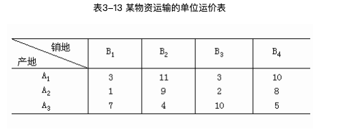
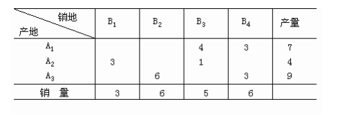

如何以最低运输成本，将货物由来源地送至目的地。
问题建模
典型范例：各工厂应分别运送多少数量至各配销中心，才能获得最低的总运输成本？
建立线性规划模型：
求得的最优解为：
运输问题的一般LP数学模型
s.t.
上式中的两个限制条件:
- (2-2)为供给限制条件，表示工厂i的供给量为
- (2-3)为需求限制条件，表示配销中心j的需求量为
对于任何可以建模成以上数学模型的线性规划问题，都可以称之为运输问题。
模型假设及性质
运输问题基于两个假设条件：
供给等于需求：
若不相等，则需要进行调整
成本成比例性：
运输成本=单位运输成本()x运送数量()
整数解性质
虽然运输问题是线性规划问题，但是当所有和均为整数，不需要加上整数限制，该问题自动变成整数规划问题，从而得到整数解。
产销不平衡情况的处理
总供给大于总需求
加上一个虚拟目的地或虚列
总供给小于总需求
加上一个虚拟来源或虚行
限制分配
：即来源i至目的地j没有适当的路径，或来源i所供给的货物并不符合目的地j的需要。
让(对min问题，M表示一个无限大的值)，同时使。
需求存在上限和下限(意味着总需求大或等于总供给)
需求经常分为两部分：
- 一部分是必须满足的最低需求
- 另一部分则是可额外多出的需求
做法:在所增加的虚列中，相应的需求下限的单位成本为M，而让额外需求的单位成本为0。
举例
示例1(总供给大于总需求)
未来一年第1至4季需求35、50、80、20艘游艇，公司本身产能38艘/季；可外包给两家代工厂，成本增加3万元/艘；两家代工厂的合计产能20艘/季。公司可利用存货调节旺季的需求，存货成本1.5万/季/艘。
问题分析：
对于上述问题，由于总供给为(38+20)*4 = 232，总需求为35+50+80+20=185；这种特殊情况属于总供给大于总需求的情况，需要增加虚行来进行调整。
来源：
- 公司本身第一季度的供给量->C1
- 代工厂第一季度的供给量->T1
目的地：
- 季度1->W1，以此类推，虚行->W5
单位运输成本:
- C1行W1列对应的单位运输成本：表示第一季度公司生产的游艇供给给第一季度的成本为0；
- C1行W2列对应的单位运输成本：表示第一季度公司生产的游艇供给给第二季度的成本为1.5，因为该存货存放1个季度的成本为1.5。
示例2(需求存在上限和下限)
图中对于W2的需求上限，可以根据上面的示例限制条件求的，当满足其他所有目的地的需求量之后，剩下的供给量即为W2的需求上限:285-65-60-0 = 160。
对应这个问题，相当于总需求大或等于总供给的情况，需要添加虚拟行来进行调整。
对于目的地的需求上限和需求下限均非0，且不想等的情况下，需要对应的目的地使用两列来表示，其中一列的需求量为需求下限，另外一列的需求量为(需求上限-需求下限)。
由于需求下限对应列的需求量可由正常的来源地供给，所以在虚拟列中它对应的单位运输成本为M(表示不需要)，而另一列表示可额外多出的需求量对应的单位运输成本为0(表示不存在)，该需求量有虚行对应的来源地供给。
运输问题中的解法
表上作业法(产销平衡)
表上作业法是单纯形法在求解运输问题时的一种简化方法。这一方法的计算步骤如下所示：
找出初始基可行解，即在产销平衡表上给出m+n-1个数字格
求解方法有西北角法、最小元素法、伏格尔法
西北角法(左上角法)
每次选取的都是左上角的第一个元素，即有限安排运价表上编号最小的产地和销地之间的运输业务。该方法的特点是 选取方便，算法简单易实现。(具体方法看参考资料)
缺点：完全没有考虑运价问题！
最小元素法
就近供应，从单价中最小运价确定供应量，逐步次小，直至得到m+n-1个数字格

第1次：从表3-13中找出最小运价为1，表示先将A2的产品供应给B1，于是更新产销平衡表：
第2次：这时从除B1列之外的其他列中找出最小运价为2，则把A2剩下的货物供应给B3。于是更新产销平衡表：
不断重复以上过程，最后得到的产销平衡表如下：

缺点：为了节省局部的运输费用，造成其它地方的运费增加
伏格尔法
第一步：首先在表3-13中分别计算出各行、各列的最小运费和次最小运费的差额，并填入该表的最右列和最下行：
第二步：从行或列差额中选出最大者，选择它所在行或列中的最小元素。如上表所示，B2列是最大差额所在列，B2列中最小元素为4，因此可确定A3的产品应该优先供应B2的需要。因此产销供应表更新如下：
划去表3-13中的B2列，对未划去的元素重复第一、二步，直到给出初始基可行解为止。最终求的的初始基可行解为：
求各非基变量的检验数，即在表上计算空格(非基变量)的检验数，判别是否达到最优解。如果已是最优解，则停止计算，否则转入下一步。
求解方法有闭回路法、位势法
确定换入变量和换出变量，找出新的基可行解(即在表上用闭回路法进行调整)
重复2、3，直到求出最优解为止。